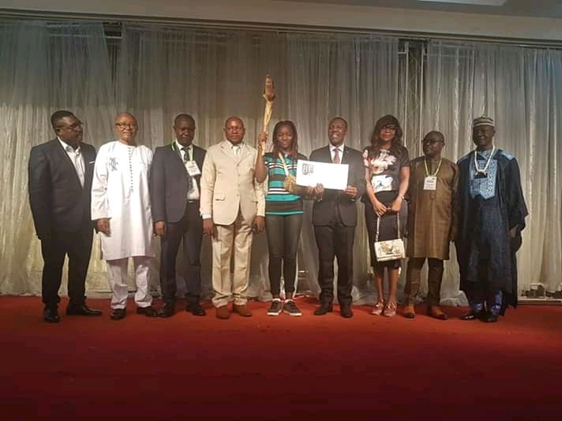
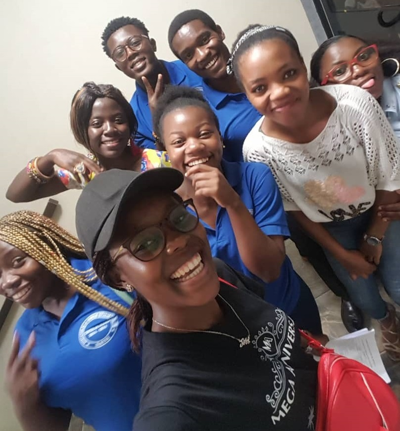
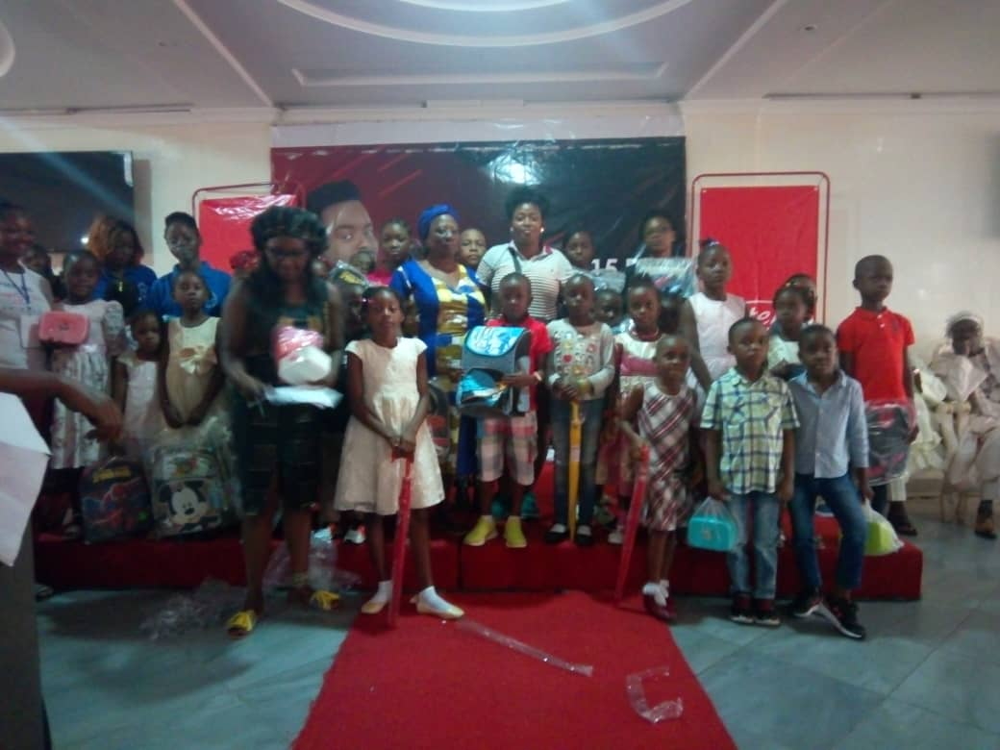

La Connaissance est le Pouvoir
5ème édition de la journée de l'excellence scolaire et académique organisée par la communauté Batie de Douala. Événement devenu traditionnel dans cette communauté et baptisé "Loug'ngap ", vise à récompenser les élèves et étudiants qui se seront distingués de manière significative lors de l'année scolaire.
Afin de stimuler l'apprentissage et de motiver les bons comportements, de nombreux enseignants utilisent des récompenses pour les étudiants.
Motiver vos élèves à apprendre et à participer peut être très difficile. Certains enseignants ont plein à faire avec la direction de la classe et n’apprennent même pas à enseigner.

Même de petites récompenses peuvent motiver les gens à faire des efforts supplémentaires
Récompenser et reconnaître nos étudiants est un objectif important chez Batie. Il est essentiel que leurs efforts et leurs efforts soient reconnus et récompensés tout au long du processus d’éducation. On s'attend constamment à ce que tous les élèves soient félicités et récompensés et à ce que le développement de tout l'enfant soit hautement prioritaire.

Les félicitations principales sont attribuées aux étudiants pour le travail ou les réalisations de la plus haute qualité. Tous les membres du personnel éducatif sont invités à désigner des étudiants. En plus de recevoir un certificat et une lettre du directeur pour leurs parents / tuteurs, les élèves reçoivent un badge d’honneur Batie.

Les élèves se conforment aux comportements appropriés lorsqu'ils sont récompensés de manière intrinsèque ou extrinsèque. Ils manifesteront de l'intérêt et augmenteront leur participation aux tâches, responsabilités et apprentissages quotidiens de la classe. Les incitations pour les étudiants les motivent à être plus productifs car ils créent un sentiment de fierté et de réussite. Avoir du succès vous rend heureux.

Véronique Nayolo ( Blogger )
Il est très important de récompenser l’éducation et j’espère que cet article appelle à la sensibilisation.
Comments
Ernesto Tagho
3 days agoBon travail. J'espère que cette pratique continuera dans les années à venir.